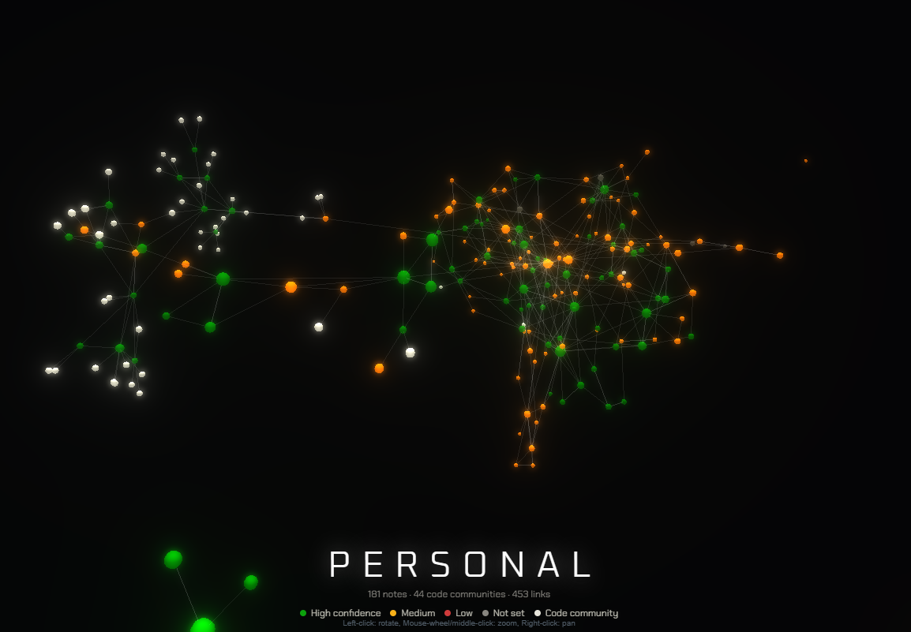
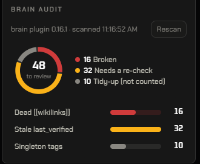
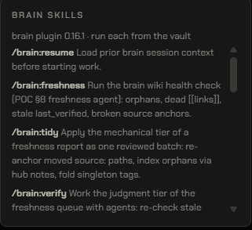

brain is a git-backed vault that every agent session reads before it greps: a deterministic graph of your code, a wiki of the decisions code can't tell you, and a log of what the last session learned.
An agent that re-derives your architecture from raw files each morning spends its first ten minutes guessing, and the decision you made on Tuesday is gone by Thursday. The code can say what. It has never been able to say why.
A brain turns "re-read everything" into "read what the last session already knew."Graph for structure. Wiki for reasons. Logs for continuity. All of it in git, all of it diffable.
The vault's own instructions tell every agent to answer in this order. Each layer is cheaper and more certain than the one after it, so most questions never reach raw files.
Functions, calls and communities extracted from the AST by graphify. Deterministic, seed-pinned and keyless, so two machines build the same graph from the same commit.
One fact per note, with an owner, a source anchor into code, a confidence and a last-verified date. Agents write drafts. People promote the keepers through a pull request.
Still there, still read, but only when the graph and the wiki have already narrowed the question to a handful of files. Grep becomes the confirmation, not the search.
Five moves. Each one is a command with a JSON result, so any host that can run Node can run the loop, and nothing depends on remembering a ritual. Shown as brain …: in Claude Code these are the /brain:* skills; elsewhere, node PLUGIN/bin/brain.mjs ….
Bind the repo to a vault: a GitHub repo, a local bare repo, or a plain folder. Pick the stack and the source roots.
brain init --vault URL
Build the first code graph at the recorded scope and mirror it into the vault on an isolated session branch.
brain graph build --root . --stack node-ts
Start the next session with the hot cache, the last logs and the notes relevant to the task, inside a word budget.
brain resume --task "…"
Write a dated log, refresh the hot cache, rebuild changed graphs and ingest changed docs as drafts. All through an allowlist.
brain save prepare · save apply
Put the save on the default branch. The remote decides how: a PR on GitHub, a fast-forward anywhere else.
brain land --session ID
A knowledge tool earns trust by what it refuses. These are enforced in the scripts, not promised in a README.
Every build and save happens in its own git worktree on a brain/session-* branch. The checkout you work in is never touched, and a dirty vault refuses with a remedy that never involves reset --hard.
The vault's .saveinclude is the whole permission model. The commit gate inspects the git index before the first git add, so a stray staged file refuses the commit and leaves nothing behind.
Anything an agent or an ingest pipeline writes lands in wiki/_drafts/. A trusted note exists only after a person promotes it in a pull request. Drafts older than 14 days are promote-or-drop.
The code graph is an AST extraction with a pinned hash seed. No API key, no network, no sampling. The wiki concept graph runs inside your own host session.
Landing is a fast-forward or a PR. Anything else is reported as left open, with the reason, and the branch stays where you can see it.
A local bare repo, GitLab, a file share or a plain folder all work. The remote you give it decides the landing mode, and brain status shows which one you got.
One prerequisite everywhere: uv, which the brain uses to install a pinned, hash-checked graphify on the first init.
# inside Claude Code /plugin marketplace add https://github.com/karch4162/agent-infra /plugin install brain@agent-infra # restart, then in your project /brain:init # vault, graph scope, first seed /brain:resume # start of a session /brain:save # end of a session
Claude Code clones and caches it; updates arrive with /plugin update brain@agent-infra.
Registers the vault, installs graphify and its skill, writes the per-stack carve-out and records the scope.
The graph-before-grep hook nudges the agent to the graph first. You never run a query command by hand.
# in your terminal copilot plugin marketplace add karch4162/agent-infra copilot plugin install brain@agent-infra graphify install --platform copilot # skills are model-invoked: ask for them in plain words "set up the brain here" # init, stack question, seed "save the brain" # prepare → apply → land
Copilot keeps skills under ~/.copilot/skills/; the skill activates after a restart.
Copilot has no slash commands; the brain's skills trigger on natural language and run the same portable commands.
A local bare repo as the vault origin lands saves by fast-forward. Windows, PowerShell and Git Bash are all covered.
# any host that can run Node 20, Git and Bash
node PLUGIN/bin/brain.mjs init --vault https://github.com/ORG/VAULT.git
node PLUGIN/bin/brain.mjs graph build --root . --stack python
node PLUGIN/bin/brain.mjs resume --task "current task"
node PLUGIN/bin/brain.mjs save prepare --session ID
node PLUGIN/bin/brain.mjs land --session ID
Ships as a Codex plugin from the same repo; the skills are shared and the commands above are the contract.
Load the plugin through Claude-plugin compatibility or a plugin directory; Grok Bot binds a URL-backed vault on its cloud machine.
Each command returns a state. error and a nonzero exit mean it did not happen; partial states are never upgraded to success. The full contract is in portable.md.
A note that cites a line that moved, a link to a page that was renamed, a fact nobody has checked in a quarter. Each maintenance skill finds one kind of rot, proposes the smallest fix, and ships it as one reviewed pull request. Nothing is deleted on your behalf.
/brain:freshnessOrphans, dead links, stale verification, broken source anchors, as a review queue./brain:tidyApplies the mechanical findings as one approved batch: re-anchor, index, fold tags./brain:verifyOne read-only agent per judgment finding, checking the claim against the code it cites./brain:reviseTurns verify's evidence into the smallest body edit, applied only with approval./brain:labelNames graph communities vault-side, never overwriting a name a person gave./brain:consolidateDistils one community of notes into a single sourced synthesis draft./brain:promoteThe human gate: keep, merge or drop each draft, then one PR for the batch./brain:doctorDiagnoses and repairs the graphify install, the binding, the registry and the caches.

